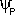

The water potential of pure water in an open container is zero because there is no solute and the pressure in the container is zero. Adding solute lowers the water potential. When a solution is enclosed by a rigid cell wall, the movement of water into the cell will exert pressure on the cell wall. This increase in pressure within the cell will raise the water potential.
Water potential () =
pressure potential () + solute potential ()